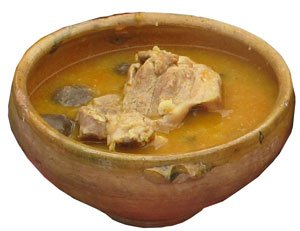

La llama es un mamífero camélido que abunda en el altiplano y en la puna andina. Deriva del guanaco salvaje domesticado por los nativos y puede pesar hasta 200 kg. De ella se aprovecha su carne y lana y es utilizada como animal de carga. Una de las populares recetas del altiplano con carne de llama es el condori, una especie de fricasé.
De origen Orureño,La carne de llama contiene proteínas de alta calidad y su cantidad de grasas es bastante menos en comparación con los cortes de otros animales..
Su proporción de colesterol es más de 10 veces menor a la de la carne vacuna y de cerdo, siendo una de las fuentes de proteínas y vitaminas más saludables entre los alimentos de origen animal.
|  | Condori |